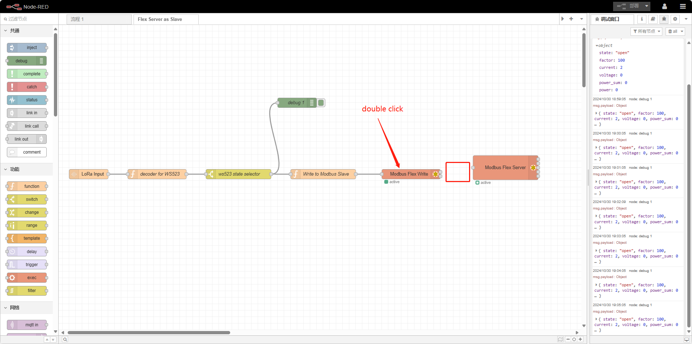
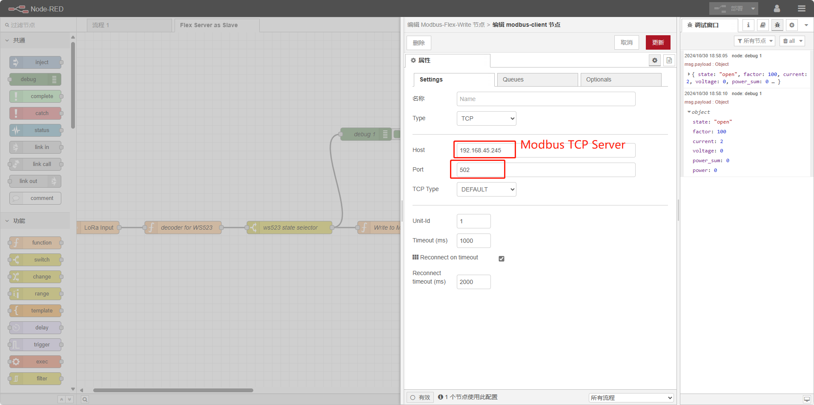
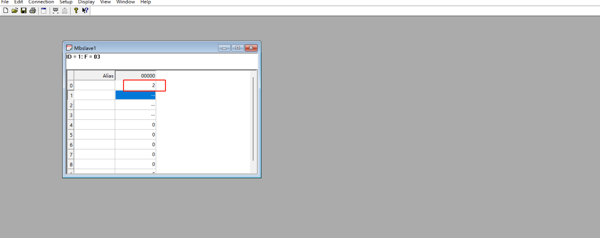

Node-Red and Modbus solution
| Version | Update Time | Description | Author |
| 1.0 | Oct 30, 2024 | Initial version | Charles |
Description
This article will use the Node-Red functionality of the Milesight gateway to configure the gateway as a Modbus Slave to store data from the WS523, as well as to configure the gateway as a Modbus Master to store WS523 data to another Modbus TCP Server. Therefore, the protocol used in this article is Modbus TCP.
Requirement
Milesight Sensor: WS523
Milesight Gateway: UG6x / UG56
Modbus Master simulation software: Modbus Poll
Modbus Slave simulation software: Modbus Slave
Configuration
① Milesight gateway as Modbus Slave
You need to connect the WS523 device to the built-in NS (Network Server) of the Milesight UG65.
You need to log in to the front-end configuration webpage of the UG65 gateway, launch the Node-RED software, and import the JSON file.You can download this JSON file by clicking this icon: Download flows-modbus.json
. After importing this JSON file into Node-RED, you will see the following data flow diagram. The functionality of this data flow diagram is to write the voltage value of the WS523 device into the built-in registers of the UG65 when the WS523 socket is externally powered

The functions of each node in the diagram are as follows:
① LoRa Input: Receive LoRa data transmitted by the WS523.
② decoder for WS523: Decode the LoRa data received from the WS523.
③ Ws523 state selector: Filter out the sensor data from WS523 devices that are externally powered.
④ Write to Modbus Slave: Write the voltage data from the WS523 sensor into a specific register (determined by the Slave ID and Starting Address).
⑤ Modbus Flex Write and Modbus Flex Server: Write the voltage data into the registers of the local machine (UG65).
The most notable node mentioned above is the 'Write to Modbus Slave' node. It is a function node that determines where we store the voltage data in which register and starting address. When you double-click on this node with your mouse, you will see the code inside it, as shown in the following image.

The code in the above image is as follows:
var fc = 16;
var addresses = 1;
var value_1 = msg.payload.voltage;
var buf = Buffer.alloc(4);
buf.writeFloatBE(value_1);
var values_1 = [(buf[0] * 256 + buf[1]), (buf[2] * 256) + buf[3]]
msg.payload = { "value": values_1,'fc': fc, 'unitid': 1, 'address': 1, 'quantity': 2 };
return msg;
The statement msg.payload = { "value": values_1,'fc': fc, 'unitid': 1, 'address': 1, 'quantity': 2 }; is the code what you need to modify. You don't need to modify the rest of the code. 'unitid' determines the Slave ID, and 'address' determines the starting address of the register. Therefore, you only need to modify 'unitid' and 'address' to store the voltage data in different registers. So from the above code, we can understand that I am storing the voltage value in the register with Slave ID 1 and starting address 1.
Reading Test From Modbus Master
The voltage of my current WS523 socket is 1.8 volts. I am using Modbus Poll software as a Modbus Master to read the voltage value stored in the register with Slave ID 1 and starting address 1 in UG65.
As shown in the figure below, I successfully obtained the register data of Slave ID 1 and starting address 1 in Modbus Poll, which stored the current voltage value of WS523. As shown in the figure below, I successfully obtained the register data of Slave ID 1 and starting address 1 in Modbus Poll, which stored the current voltage value of WS523.

② Milesight gateway as Modbus Master
Additionally, you can also configure the Milesight gateway as a Modbus Master to transmit the sensor data received by the gateway to a Modbus TCP Server. You just need to disconnect the link between the Modbus Flex Write node and the Modbus Flex Server in the aforementioned Node-Flow. Then, double-click the Modbus Flex Write node and specify the Modbus TCP Server where you want to store the data in this node, as shown in the figure below.

In the test, I used the Modbus Slave software as the Modbus TCP Server and specified the server's IP as 192.168.45.245 and the port as 502. I stored the 2A current sensor data from the Milesight WS553 to this Modbus TCP Server. Therefore, my configuration in the Modbus Flex Write node is as shown in the figure below.

Afterwards, you can see the 2A current value of the WS523 on the relevant Modbus Slave software.
